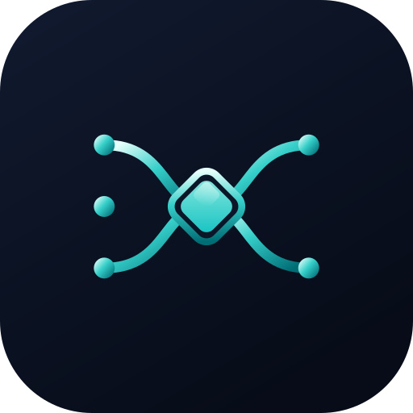
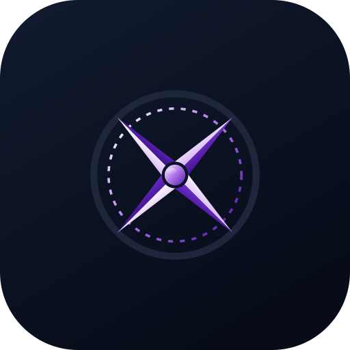
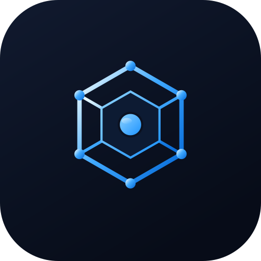
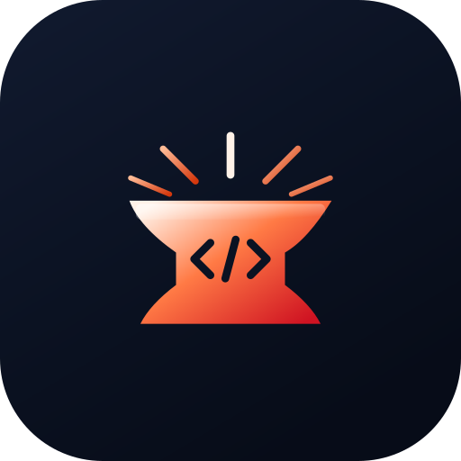
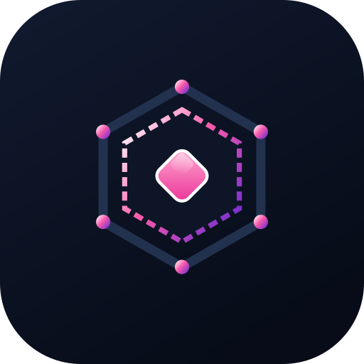
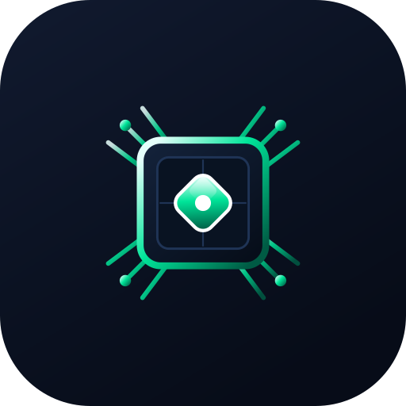
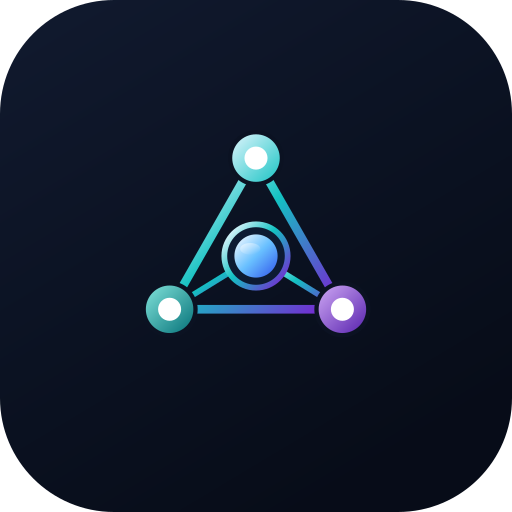

CAIRN structures system capabilities into 10 formal Enterprise Pillars and control plane components. Below are direct captures and architectural specifications from the running CAIRN Trust Fabric local orchestration engine, sovereign desktop client, and enterprise control plane.
Core evaluation, execution, compute, and operational interfaces across CAIRN's enterprise governance system.
CAIRN operates as an unyielding default-deny security boundary. Every incoming prompt instruction and proposed tool call is intercepted and evaluated against strict cryptographic policies prior to execution.
By separating cloud reasoning models from direct OS tool access, CAIRN removes the path by which an injected instruction reaches a tool unreviewed: every proposed call is graded and must clear its assurance bar first.
Emits a contract evaluation event for every decision, recorded in the hash-chained ledger.



PATH is the intent classification and task orchestration layer. It inspects user prompts alongside institutional context to decompose complex goals into multi-step execution plans.
Maintains model-agnostic routing, dynamically selecting local Ollama workers or cloud backbones based on hardware availability and security clearance.
Prevents model vendor lock-in while maintaining total operational continuity during external cloud outages.

BEACON maintains real-time operational awareness across active agent daemons, streaming live WebSocket progress telemetry directly to enterprise dashboards.
Synthesizes intermediate execution updates without exposing sensitive payload data, ensuring enterprise risk teams maintain total visibility over background tasks.
Acts as the central event bus connecting local hardware workers with enterprise monitoring infrastructure.


COMPASS records a hash-chained evidence log of every session trace, tool call and model response, with signed checkpoints over the chain.
Provides audit provenance detailing exactly which institutional knowledge notes were referenced, which models executed the plan, and whether code execution was container-verified.
Exports the evidence a risk function or an external auditor asks for, in a bundle they can verify without CAIRN.


ATLAS synthesizes unstructured enterprise data into a 4-layer memory fabric combining Episodic SQLite Event Ledgers, Knowledge Notes, Entity-Relationship Graphs, and Semantic Vector FTS.
Checks document freshness and provenance before context reaches the model, and records which fragments were supplied. Grounding reduces unsupported output; it does not eliminate it, and no retrieval layer can.
Indexes saved automation scripts to prevent re-inventing institutional workflows.


FORGE synthesizes candidate scripts and automation workflows using specialized local code models. It triggers a 3-stage verification pipeline (syntax compilation check, pattern pre-filtering, and container containment).
Manages cryptographic secret protection, API credential handles, and script integrity allow-lists within the local automation vault.


CRUCIBLE represents the Execution and Sandbox Containment boundary. It pairs directly with FORGE: FORGE shapes candidate code; CRUCIBLE runs it under container isolation (Docker) and grades the result before execution is trusted.
Enforces zero-network containment (--network none), a per-language memory ceiling (128m by default), and read-only container filesystems.
If runtime errors occur inside the container, CRUCIBLE feeds exact stack tracebacks back to FORGE for automated defect-repair loops.


ACCELERATOR connects sovereign edge compute nodes, dedicated GPU clusters (NVIDIA DGX, Spark, VKS nodes), and LAN accelerators directly to the CAIRN trust mesh.
Performs automated capability matching and tensor offloading, ensuring high-throughput local inference with zero latency penalty and complete hardware data isolation.
Enables air-gapped high-performance model execution across private networks.

MODEL FLEET is the distributed model worker swarm coordinator. It dynamically balances reasoning tasks across heterogeneous local model backends (Ollama, vLLM, LM Studio) and sanctioned enterprise cloud endpoints.
Enforces model health heartbeats, automatic fallback chains during single-model degradation, and token budget throttling across corporate teams.
Maintains total vendor independence and operational continuity under air-gapped conditions.
SETTINGS manages enterprise policy-as-code distributions, cryptographic root certificate stores, telemetry endpoints, and per-environment security tolerances.
Enables platform administrators to configure air-gapped operational modes, audit ledger export schedules, and granular access boundaries with single-click verification.
Maintains signed configuration state hashes ensuring zero configuration drift across deployed nodes.